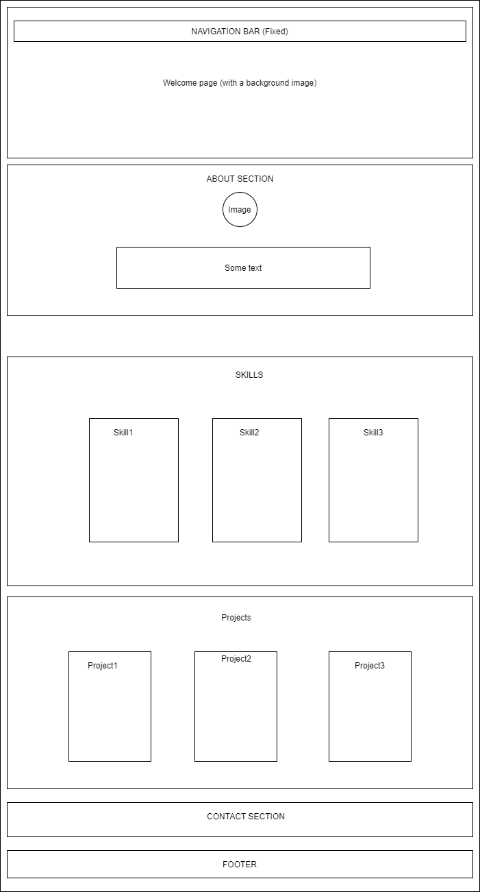
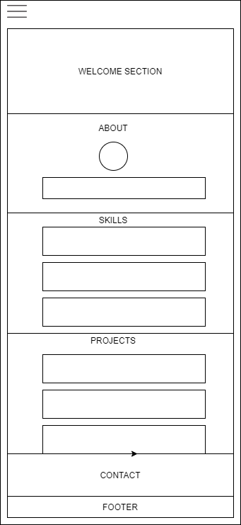

Overview
This is a presentation of my portfolio webpage. Different sections about my page will be talked about. Most of the skills covered in the course has been used. Some of what has been covered in the course has not been used in this project because I didnt have a need to use them. Ex: video, audio, table, form,... has not been used.
Site design schemas
Here is a presentation of the desktop and mobile views of the website.
This is just an overall description of the website. The website itself might contain more sub-boxes than showed on these images.
Desktop view
Mobile view
Welcome-section
This section is made with h1 and h3 elements and on the background is an image.
About
Here we can find a profile picture and a profile text
Skills section
A flex container has been used. Inside it, three boxes( 1 for each type of skills). Also some icon has been used from https://ionic.io/ .
Projects section
This section is similar to the skills section. The structure and elements used are almost the same with slightly differences.
Contact section
This is a combination of paragraphs and icons. Nothing special!